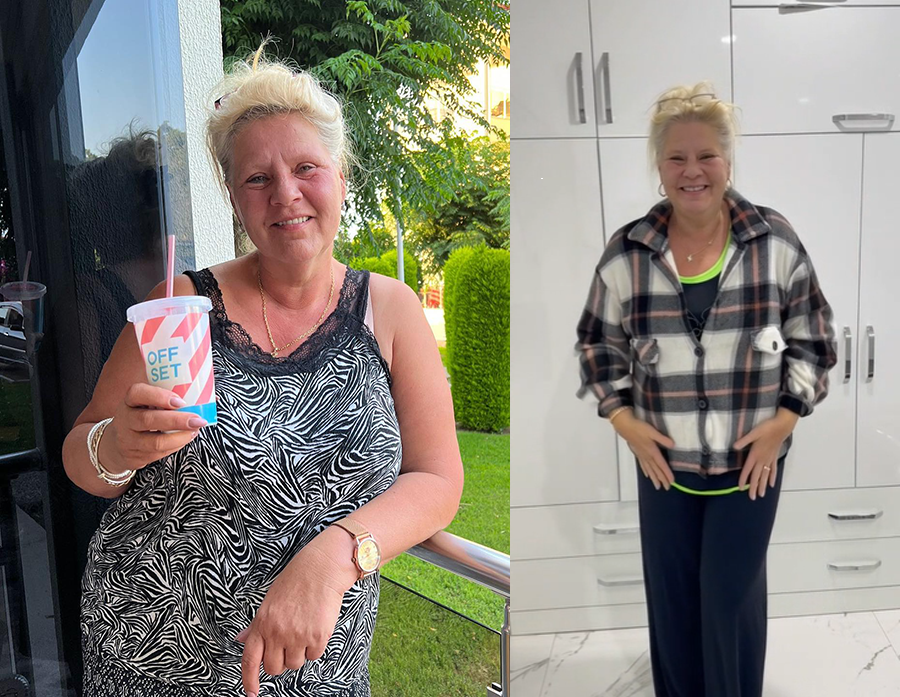
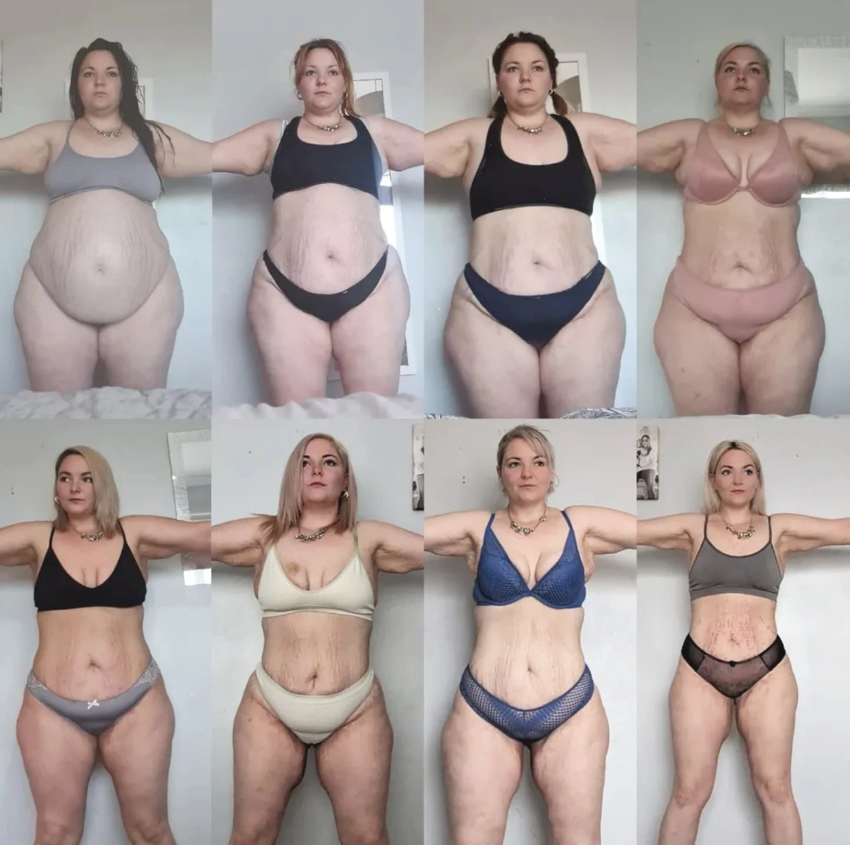

– Es ist eine Keto-Revolution!
Die Partner, die für das brandneue GLPura verantwortlich sind, eroberten Die Höhle der Löwen im Sturm. In der meistgesehenen Folge in der Geschichte von Die Höhle der Löwen war es soweit: Prof. Dr. Dr. Simone Kreth entwickelte das Produkt auf Grundlage wissenschaftlicher Studien über die ketogene Ernährung. „Wir wussten, dass es funktioniert, den Körper in einen Zustand der Ketose zu versetzen. Wir wollten jedoch einen Weg finden, den Körper in diesen Zustand zu bringen, ohne die strenge Diät.“ So wurden die Ketogen-Salze geboren.
Das Produkt wurde von den Löwen gekauft, und in einer begrenzten Testphase waren die Ergebnisse unglaublich. „Die neue Keto-Diät steht kurz davor, die gesamte Ernährungsbranche zu revolutionieren“, sagte Investorin Judith Williams. „Ich wollte das Produkt selbst haben – ich wusste, dass es sich auf HSE hervorragend verkaufen würde. Aber ich bin froh, dass wir es teilen. Ich möchte dem Ziel der Gründer treu bleiben und allen den Zugang dazu ermöglichen.“
Was ist passiert?
Noch nie zuvor hatte eine Folge von „Die Höhle der Löwen“ einen solchen Bieterwettstreit ausgelöst – alle Löwen wollten das Produkt unbedingt haben. Genau das geschah, als die Gründer von GLPura, Prof. Dr. Dr. Simone Kreth und Prof. Dr. Bernhard Zwißler, in der Sendung auftraten. Am Ende sicherten sich die Investoren beeindruckende 25% der Anteile und versprachen persönlich, das Gründerduo zu unterstützen und eine neue, speziell auf Frauen ausgerichtete Marketingkampagne für ihr revolutionäres Produkt zu begleiten.
„Wir hatten wirklich nicht mit einer solchen Reaktion gerechnet. Wir hofften auf etwas Finanzierung, vielleicht ein wenig Aufmerksamkeit – aber die Löwen erkannten sofort, was wir da entwickelt hatten“, sagte Bernhard Zwißler nach der Ausstrahlung.
Seit der Sendung arbeiten die beiden intensiv daran, den Rat der Löwen umzusetzen – mit neuer Markenstrategie, neuen Kampagnen und dem Ausverkauf ihrer ersten limitierten Produktcharge.
Wir haben uns mit den Partnern zusammengesetzt, um mehr darüber zu erfahren, wie alles begann.
InTouch: Erzählen Sie uns, wie wussten Sie, wo Sie anfangen sollten?
Simone: Um ehrlich zu sein – ich wusste es eigentlich nicht. Aber ich war mir sicher, dass es eine bessere Lösung zur Gewichtsreduktion geben musste. Also begann ich, mit meinen Patienten zu sprechen. Ich wollte herausfinden, welche Veränderungen sie realistisch bereit waren vorzunehmen und wie viel sie tatsächlich tun würden, um abzunehmen. Was ich herausgefunden habe? Die Menschen brauchen eine Methode zur Gewichtsabnahme, die in ihr Leben passt. Sie haben Arbeit, Kinder, Haushalt und Einkäufe. Sie haben keine Zeit für komplizierte Diäten oder übertriebene Trainingspläne.
InTouch: Und wie sind Sie auf die Keto-Diät aufmerksam geworden?
Bernhard: Das war ganz mein Verdienst. Das Magazin Der Spiegel veröffentlichte vor etwa einem Jahr einen Artikel darüber.Ich erinnerte mich, wie die Keto-Diät erneut als „Wundermittel“ angepriesen wurde. Das Problem? Die Menschen schaffen es nicht, sich an diese komplizierte Diät zu halten. Das war also unser Ausgangspunkt. Wir wussten, wir mussten einen Weg finden, den Stoffwechsel der Menschen zu verändern – nur eben ohne… na ja, die ganze Mühe.
Seit der Sendung haben die Partner ihre erste Produktionsreihe von GLPura komplett ausverkauft und bereiten bereits die nächste Charge vor. Die bisherigen Ergebnisse sind schlicht unglaublich.
InTouch: War es teuer, GLPura zu entwickeln?
Simone: Die ersten Tests und Forschungsarbeiten waren es tatsächlich. Aber eine unserer größten Herausforderungen war, dass wir GLPura für alle erschwinglich machen wollten. Deshalb bieten wir verschiedene Pakete und Optionen an, damit es in jedes Budget passt.
InTouch: Beeindruckend! Können Sie erklären, wie die Anwendung funktioniert?
Bernhard: Viel gibt es dazu eigentlich nicht zu sagen – genau das ist ja der Reiz daran. Man muss lediglich jeden Morgen nach dem Aufstehen eine Kapsel einnehmen. Wenn jemand Schwierigkeiten beim Schlucken hat, kann die Kapsel geöffnet und in Wasser aufgelöst werden – das war’s! Natürlich empfehle ich als Arzt immer eine gesunde Ernährung und Bewegung. Aber ehrlich gesagt, Sport hilft kaum beim Abnehmen – eher für die allgemeine Gesundheit. Nach nur 30 Tagen haben wir bereits erstaunliche Ergebnisse gesehen. Nach drei Monaten hatten alle unsere Testpersonen mindestens 9 kg verloren.
Auch Prominente haben ihre Ergebnisse geteilt.
„Ich habe jede Diät ausprobiert, die es gibt. Wirklich jede. Und keine davon konnte ich jemals durchhalten. Diese Diät mag ich, weil ich im Grunde nichts tun muss und trotzdem Ergebnisse sehe!“
Ich habe an der ersten GLPura-Studie teilgenommen. Mein Arzt hat mich für den Versuch angemeldet, und ich habe 44kg abgenommen – ganz ohne Sport oder Diät. Durch den starken Gewichtsverlust war meine Bauchhaut anfangs tatsächlich schlaff, aber nachdem ich GLPura weiter eingenommen und zusätzlich Eiweißpräparate verwendet habe, wurde sie nach und nach wieder straffer.
Der bekannte Arzt Eckart von Hirschhausen hat in Interviews sowie in den Medien WH und GH ebenfalls über Keto Salts berichtet.
Wir mussten mehr darüber erfahren, was genau GLPura ist und wie es funktioniert. Wir hatten vorher noch nie davon gehört, aber jetzt waren wir neugierig. Nachdem wir die Zustimmung unserer Rechtsabteilung erhalten hatten, drängte unsere Chefredakteurin auf eine Fallstudie. Unsere neue, engagierte Reporterin Leonie Fried war nur allzu glücklich, als Versuchsperson zu dienen. Sie erhielt die Aufgabe, diese „Promi-Diät“ auszuprobieren und ihre Erfahrungen über 31 Tage hinweg zu dokumentieren.
Bevor sie begann, mussten wir sicherstellen, dass es sich um das richtige GLPura-Produkt handelte. Unser Insider hatte uns gewarnt, dass 90 % aller Produkte auf dem Markt weniger als 30 % Keto-Wirkstoff enthalten, der Rest bestehe aus essbaren Füllstoffen. Nach tagelanger Recherche stellten wir fest, dass GLPura auf Amazon die beste Bewertung hatte. Mit über 4.000 positiven Kommentaren und einer Gesamtbewertung von 4,9 Sternen waren wir überzeugt. Wir waren gerade dabei, es zu bestellen, als wir bemerkten, dass die Anbieter von GLPura derzeit exklusive zeitlich begrenzte Rabatte für unsere Leser anbieten! (Mehr Informationen unten)
Das Geheimnis hinter GLPura liegt in seiner Fähigkeit, den Appetit zu zügeln und gleichzeitig den Stoffwechsel zu beschleunigen – wodurch der Körper zu einer regelrechten Fettverbrennungsmaschine wird.
Warum ist GLPura so effektiv?
GLPura enthält die natürlich vorkommenden Inhaltsstoffe Keto Salts, die den Körper zwingen, sich in einem ständigen Zustand der Ketose zu befinden. Ketose ist ein natürlicher Prozess, den der Körper aktiviert, wenn die Nahrungsaufnahme gering ist. In diesem Zustand produziert der Körper Ketonkörper, die aus dem Abbau von Fett in der Leber entstehen. Indem man den Körper in die Ketose versetzt, verbrennt er kontinuierlich Kohlenhydrate und Fett zur Energiegewinnung.
Es ist klinisch erwiesen, dass GLPura Folgendes bewirkt:
- Steigert die Stoffwechselgeschwindigkeit um 70 %.
- Stoppt die Bildung von Glukose- und Fettspeicherzellen um 150 %.
- Hilft dem Körper, Fett als Energiequelle zu nutzen, statt es einzulagern.
- Reich an Antioxidantien und Serotonin, was den Energielevel steigert.
- Reduziert den Spiegel von Cortisol (dem Stresshormon) und fördert so die mentale Gesundheit.
- Schützt und regeneriert die Gehirnfunktion sowie das Nervensystem.
Für unsere Fallstudie bestellten wir GLPura mit einem zeitlich begrenzten Rabattangebot. Die Anbieter bieten unseren Lesern derzeit einen besonderen, risikofreien Sonderrabatt an. (Exklusive Links siehe unten)
Drei Tage später wurde GLPura geliefert. Unten sind meine Ergebnisse aufgeführt – und sie sind, gelinde gesagt, äußerst interessant!
Mein Ergebnis – Ich habe in nur einem Monat mit GLPura 13kg Bauchfett verloren. Ich sehe großartig aus und fühle mich genauso! – Leonie Fried
Fazit: Tatsächlich wirkt es. Anfangs waren wir skeptisch, aber du musst die Wirkung dieser Ernährungsweise selbst ausprobieren. Nach unserer eigenen Untersuchung freuen wir uns zu sehen, dass viele Menschen damit echte Erfolge erzielen, mich eingeschlossen. Und Sie haben nichts zu verlieren. Um Ihre zeitlich begrenzten Rabattflaschen zu bestellen, folgen Sie einfach den unten angegebenen Links – so können Sie sicher sein, hochwertige und wirksame Produkte zu erhalten, ganz ohne versteckte Bedingungen.
Comment
Lena Müller
Ich war anfangs sehr skeptisch, weil ich schon so viele Produkte ausprobiert habe. Nach zwei Wochen mit dem GLPura merke ich jedoch, dass ich mich viel leichter und energiegeladener fühle. Besonders morgens bin ich wacher und mein Verdauungssystem funktioniert besser.
Like · Reply · 1551
Sabine Fischer
Ich benutze das GLPura jetzt seit knapp einem Monat. Es schmeckt angenehm mild und ich habe viel weniger Heißhunger auf Süßes. Außerdem habe ich festgestellt, dass meine Haut reiner geworden ist – das hätte ich nicht erwartet.
Like · Reply · 1452
Katrin Becker
Mein Mann und ich haben beschlossen, das Produkt gemeinsam zu testen. Nach kurzer Zeit haben wir beide gemerkt, dass wir uns weniger aufgebläht fühlen. Ich finde es toll, dass es ganz natürlich ist und keine künstlichen Zusätze enthält.
Like · Reply · 2558
Julia Hoffmann
Ich trinke das GLPura jeden Morgen in einem Glas Wasser aufgelöst. Es gibt mir Energie für den Tag und ich fühle mich insgesamt ausgeglichener. Besonders gut finde ich, dass ich seitdem weniger Lust auf Snacks habe.
Like · Reply · 2158
Laura Neumann
Ich habe das Produkt wegen der vielen positiven Berichte ausprobiert. Schon nach wenigen Tagen fühlte ich mich vitaler und meine Haut sah frischer aus. Es ist jetzt Teil meiner täglichen Routine geworden.
Like · Reply · 798
Sophie Schulz
Ich war überrascht, wie angenehm der Geschmack ist. Ich nehme es nach dem Aufstehen und merke, dass mein Kreislauf stabiler ist. Ich habe es auch meiner Schwester empfohlen, die ähnliche Erfahrungen gemacht hat.
Like · Reply · 1684
Nadine Koch
Ich habe in den letzten Monaten vieles probiert, aber nichts hat so gut funktioniert wie das GLPura. Mein Energielevel ist höher und ich fühle mich leichter. Selbst meine Kolleginnen haben bemerkt, dass ich besser gelaunt bin.
Like · Reply · 358
Claudia Klein
Ich benutze es nun seit drei Wochen. Ich fühle mich weniger müde und habe das Gefühl, dass mein Körper besser entgiftet. Ich werde definitiv eine weitere Packung bestellen.
Like · Reply · 1586
Verena Schröder
Ich war anfangs skeptisch, aber jetzt bin ich überzeugt. Meine Verdauung funktioniert besser und ich habe weniger Wassereinlagerungen. Das GLPura ist wirklich eine kleine Überraschung für mich gewesen.
Like · Reply · 1447
Anja Lorenz
Ich trinke das Salz morgens in warmem Wasser, wie empfohlen. Schon nach einer Woche hatte ich das Gefühl, mein Körper reagiert positiv. Meine Haut fühlt sich besser an und ich bin seltener aufgebläht.
Like · Reply · 1236
Sarah Brandt
Ich habe von einer Freundin davon erfahren, die total begeistert war. Nach kurzer Zeit habe ich gemerkt, dass ich mehr Energie habe und mich nicht mehr so träge fühle. Das Beste ist, dass es völlig natürlich ist.
Like · Reply · 1797